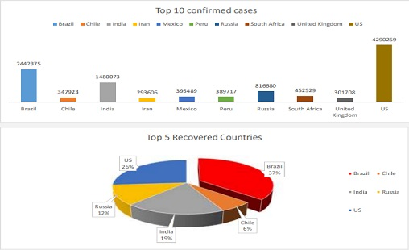
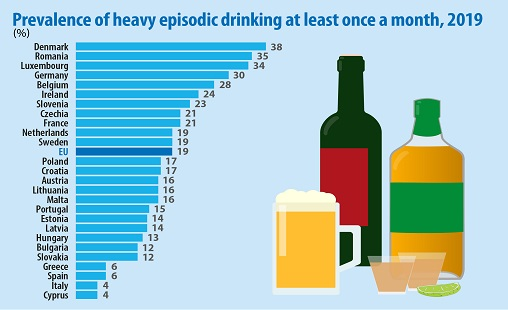
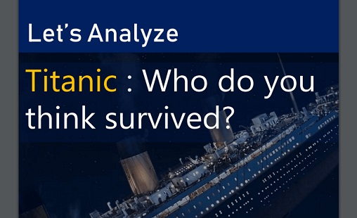
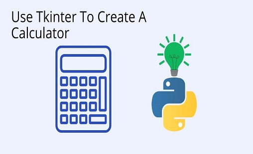
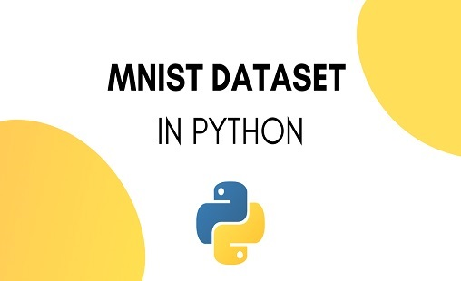

CMS STUDENT MANAGENMENT SYSTEM
Student Management System project is written in Python. This is a simple console based system which is very easy to understand and use. Talking about the system, it contains basic functions which include Add students, view students, search students,update the student, remove the student, and exit ...
COVID-19 DASHBOARD IN EXCEL

Coronavirus disease 2019 (COVID-19) time series listing confirmed cases, reported deaths, reported recoveries, and reported active. Data is disaggregated by country (and sometimes subregion). Coronavirus disease (COVID-19) is caused by the Severe acute respiratory syndrome Coronavirus 2 (SARS-CoV-2) ...
EDA PROJECT IN PYTHON
1.The Analysis of the World Covid Cases Statistics Depicts that the Major Confirmed, Active, Recovered, Deaths Cases are in Us ,Brazil ,india and in South Africa and about 20% of Cases are belong to these Major Coutries. 2.Countries Brazil , india , Us and Africa are Major Countries where New cases , New deaths , New recovereds Cases ...
HANGMAN GAME IN PYTHON
Simple Hangman Game in Python This is simple hangman game implemented in python. This game selects any random word from the file and asks you to guess character for that word. You will get 6 chances to guess a word. when you guesses correct character your chance will not be counted when you gives wrong character your chance will be reduced by one ...
KAGGAL PROJECT- WORLD'S ALCOHAL CONSUMPTION

We attempted to analyse the dataset using python.The dataset contains country wise Alcohal consumption statistics of the world. Our goal was to be able to find out the largest and lowest Aclohal consumption Countries in the world ...
MONEYBALL(Film) PROJECT IN R
Moneyball is a 2011 American sports drama film directed by Bennett Miller and written by Steven Zaillian and Aaron Sorkin. The film is based on the 2003 nonfiction book by Michael Lewis, an account of the Oakland Athletics baseball team's 2002 ...
USING EXCEL FOR STATISTICAL ANALYSIS

Data analysis is a process of inspecting, cleansing, transforming, and modelling data with the goal of discovering useful information, informing conclusions, and supporting decision-making. Data analysis has multiple facets and approaches, encompassing diverse techniques under a variety of names, and is used ...
TITANIC DATA ANALYSIS IN PYTHON

It is one of the most popular datasets used for understanding machine learning basics. It contains information of all the passengers aboard the RMS Titanic, which unfortunately was shipwrecked. This dataset can be used to predict whether a given passenger survived or not ...
WEB SCRAPING (Flipkart) IN PYTHON
By analyzing the product model, star, num_ratings, reviews, ram, storage, display, camera, battery, price using text mining we gathered most appeared positive words using the word clouds. We can conclude that text mining gains insights ...
SIMPLE CALCULATOR (using Tkinter library) IN PYTHON

Doing a mathematical calculation in your head, not trusting your answer, so you ended up using a calculator anyway. So we have just proved the importance of the simplest machine you’ve ever seen. Now let’s see how we can create this simple calculator using Python ...
Project:- Bull Cow Game IN PYTHON
Cows and Bulls is a pen and paper code-breaking game usually played between 2 players. In this, a player tries to guess a secret code number chosen by the second player. The rules are as follows: • A player will create a secret code, usually a 4-digit number. This number should have no repeated digits. • Another player makes a guess (4 digit number) to crack the secret number ...
NOISE REMOVAL FROM IMAGE (MNIST DATASET)

MNIST is short for Modified National Institute of Standards and Technology database. The MNIST dataset is a large database of handwritten digits. It commonly used for training various image processing systems. The MNIST database of handwritten digits consists of a training set of 60,000 examples, and a test set of 10,000 examples ...